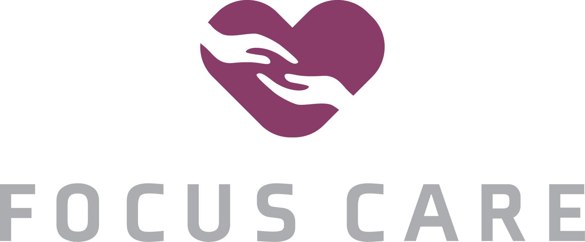
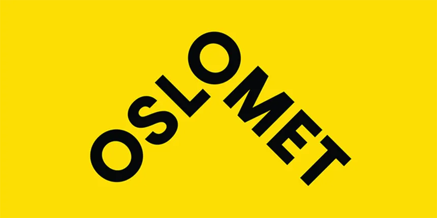

Carlos Gallego
Jeg er Designer
Om meg
Jeg har to års relevant erfaring som fakturaansvarlig og er i ferd med å fullføre en mastergrad i revisjon og regnskap. Jeg er ekstremt motivert for å ta fatt på nye utfordringer og brenner for å utforske mitt fulle potensial. Med et sterkt engasjement for kvalitet og utvikling, søker jeg kontinuerlig etter muligheter der jeg kan vokse både faglig og personlig.

Revisor, Økonom & Dataanalyse
Jeg holder på å fullføre en mastergrad i revisjon og regnskap ved NTNU – et av Norges mest anerkjente studier innen økonomi og kontroll. Studiet gir en solid faglig plattform innen finansiell rapportering, regnskapsanalyse, skatterett og revisjon, og forbereder meg både til rollen som statsautorisert revisor og til bredere karrierer innen økonomisk rådgivning, internkontroll og forretningsforståelse. Gjennom masteren har jeg utviklet analytiske ferdigheter, innsikt i komplekse regelverk, og evnen til å se både detaljene og de strategiske perspektivene. Jeg motiveres av å kunne kombinere tallforståelse med praktiske løsninger som skaper verdi for virksomheter.
- Fødselsdato: 07 Mars 1991
- Nettside: https://carlosgallegogarcia.github.io/CV/
- Bosted: Trondheim, Trøndelag
- Epost: alumnecarlosgg@gmail.com
- Telefonnummer: 00 47 45 84 84 05
Fornøyde kunder I Norges Kommunalsektor
Forbedrings- og effektiviseringsprosjekter Utviklet automatiserte prognose- og salgsrapporter, python bots for å effektivisere administrativt arbeid og dataanalyse-løsninger for rapportering og innsikt
Timer erfaring med kundestøtte rettet mot den norske kommunesektoren. All skriftlig og muntlig kommunikasjon har foregått på norsk i et profesjonelt miljø.
ansatte fulgt opp Jobb med oppfølging av ansatte, tilsyn, rapportering og bistand i praksis.
IT Ferdigheter
Jeg har utviklet solide ferdigheter innen dataanalyse ved hjelp av Python, med særlig fokus på biblioteker som pandas, numpy og matplotlib for strukturert databehandling, visualisering og innsikt. I kraft av min yrkeserfaring har jeg også svært god kontroll på Excel, inkludert datamodeller og avanserte funksjoner, samt Power BI og forretningsintelligensløsninger i Microsoft-økosystemet. Jeg jobber kontinuerlig med å holde meg oppdatert på nye verktøy og teknologier innen analyse, automatisering og programmering, og er alltid nysgjerrig på hvordan teknologi kan forbedre innsikt og beslutningsstøtte.
Jeg har høy kompetanse innen operativsystemer (Windows/macOS/Linux), generell IT-konfigurasjon og teknisk støtte. Jeg fungerer ofte som den naturlige problemløseren på arbeidsplassen – personen kollegaer henvender seg til ved tekniske utfordringer, takket være min brede forståelse av systemer, programvare og feilsøking.
I min nåværende stilling jobber jeg aktivt med å automatisere repeterende og tidkrevende oppgaver, i tråd med ledelsens ønske om å effektivisere driften. Jeg bruker primært Python som programmeringsspråk, og benytter blant annet biblioteker som Selenium for å utvikle løsninger som reduserer manuelt arbeid og frigjør tid til mer verdiskapende oppgaver. Målet er å gjøre arbeidsprosessene smartere, raskere og mer bærekraftige over tid.
CV
Før jeg startet i økonomifaget, jobbet jeg flere år innen restaurant- og hotellbransjen, blant annet som kjøkkensjef og driftsansvarlig med personalansvar. Denne erfaringen ga meg verdifulle ferdigheter innen ledelse, stressmestring og det å levere under press og korte tidsfrister – uten å la meg overvelde. Ettersom dette ikke er direkte relevant for min videre karriere innen økonomi og revisjon, omtales ikke denne erfaringen nærmere i CV-en.
Nåværende stilling
Focus Care Norge AS
2023 - Nå
I min nåværende stilling har jeg ansvar for fakturering knyttet til vikarbruk i offentlig sektor. Arbeidet innebærer løpende kundedialog i forbindelse med fakturaoppfølging og eventuelle innsigelser, samt kontroll og oppfølging av vikararbeid. Jeg vurderer også rettslige spørsmål knyttet til tolkning av hovedtariffavtaler i faktureringssammenheng.
Jeg bistår også økonomisjefen med ulike oppgaver, som utarbeidelse av økonomiske analyser – blant annet knyttet til kostnadsforbruk og lønnsomhet på prosjektnivå. I tillegg bidrar jeg ved behov i regnskapsavdelingen, med oppgaver som regnskapsavstemninger, bokføring og lønnsarbeid i samarbeid med regnskapssjefen.
- Regnskap, kundestøtte, fakturering, lønnsomhetsanalyse
- Tungaveien 30, Trondheim (Trøndelag)
- www.focuscare.no 
Utdanning
Master i Regnskap og Revisjon
2024 - 2026
Norges teknisk-naturvitenskapelige universitet
Studiets nettsideTverrfaglig masterstudium med fokus på revisjon, finansregnskap, skatterett, bærekraftsrapportering og verdsettelse. Programmet gir solid faglig og juridisk kompetanse innenfor regnskap og revisjon, og kvalifiserer til godkjenning som statsautorisert revisor.
Bachelor i Økonomi og Administrasjon
2021 - 2024
Norges teknisk-naturvitenskapelige universitet
Studiets nettsideStudieretning i regnskap, med spesialisering i skatterett, økonomistyring og finansregnskap. Bacheloroppgave om hvitvasking og økonomisk kriminalitet.
Annen relevant utdanning
Bachelor i Psykologi (4år, 240 SP)
Oppnådd i Sept. 2016
Universitat de Barcelona
- Fordypning i klinisk psykologi, personlighetsanalyse, læringspsykologi og utviklingspsykologi.
- Spesiell vekt på anvendt psykologi i HR og organisasjoner.
- Grunnleggende innsikt i psykopatologi, diagnoser, farmakologi og atferdsanalyse.
- Gjennomførte ett års praksis ved spesialpedagogisk skole i Barcelona (Escoles Fasia).
Tospråktesten, Kurs i tolkens ansvarsområde (TAO)
Oppnådd 2022
Oslo Met
TospråktestenTAO Kurs

- Tospråktesten er en muntlig prøve i norsk og et tolkespråk. Den kan brukes som grunnlag for oppføring i Nasjonalt tolkeregister kategori 5 eller som opptaksprøve til studiet Tolking i offentlig sektor.
- Formålet med TAO er å kvalifisere tolker til Nasjonalt tolkeregister i kategori E og å sikre en felles stestandard for tolking i offentlig sektor i Norge.
- Kurs i tolkens ansvarsområde er et tilbud til kandidater som oppnår tilfredsstillende resultat på Tospråktesten.
- Jeg er oppført i Nasjonal tolkeregister med Tolk-ID: 6766
- Nasjonal tolkeregister
Språkferdigheter
Jeg behersker flere fremmedspråk som et resultat av personlig interesse for språk og flerkulturell bakgrunn. Språklæring har vært en hobby gjennom hele livet, og jeg har tilegnet meg praktiske språkkunnskaper både gjennom formell utdanning og i familien.
Språknivået er angitt som et nivå fra 1 (tilnærmet A1) til 6 (tilnærmet C2). Nivå 5 tilsvarer flytende språkkunnskaper og profesjonell kompetanse, med lett aksent
Spansk
Morsmål. Behersker spansk flytende, både skriftlig og muntlig, i både formelle, akademiske og uformelle sammenhenger. Har solid kjennskap til dialektvariasjoner i både europeisk og latinamerikansk spansk.
Norsk
Flytende både muntlig og skriftlig, med profesjonell arbeidsspråkkompetanse. Har jobbet og studert på norsk i over 7 år. Snakker med lett aksent, men kommuniserer presist og effektivt i både formelle og uformelle sammenhenger.
Norsk prøve bestått: nivå B2 i 2021
Engelsk
Høy språkkompetanse, både skriftlig og muntlig. Har brukt engelsk gjennom store deler av ungdoms- og voksenlivet, både i arbeid, utdanning og privat. Behersker språket på et profesjonelt nivå i akademiske og internasjonale sammenhenger.
IELTS Engelsk test: nivå C1 bestått i 2021
Katalansk
Morsmål. Behersker katalansk flytende, både skriftlig og muntlig, i både formelle, akademiske og uformelle sammenhenger. Har solid kjennskap til dialektvariasjoner.
C1 bevis utstedt ved fullføring av VG Skole i Spania
Italiensk
Evne til å kommunisere på et nokså flytende nivå. God forståelse av både muntlig og skriftlig språk, med sterk muntlig uttrykksevne og svakere skriftlig fremstilling.
Russisk
Evne til å kommunisere muntlig og skriftlig på grunnleggende nivå. Språkkunnskapene er opparbeidet gjennom to år med privatundervisning og praktisk bruk i personlige sammenhenger.